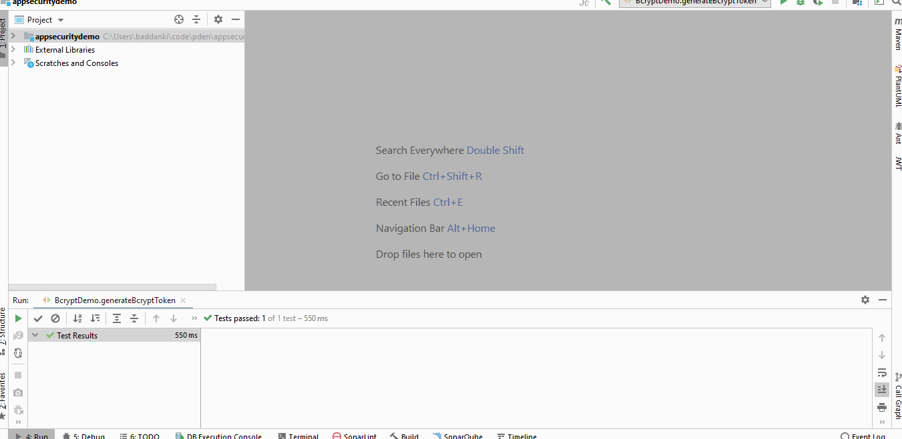

## Authentication
- Passwords
- Tokens(JWT)
- Jsession
Authentication : Passwords
- Hashing over encryption
- Bcrypt
- Bcrypt using spring security
- Password Encoder Delegation
- Demo
- Summary
### Hashing over encryption
- Why not encryption
- What are different hashing algorithms/KDFs available
- SHA-2, SHA-3, PBKDF2, Bcrypt, Scrypt, Argon2 etc
BCrypt
What is Bcrypt?
Why should we use over other hashing algorithms?

```
- salt (String)
– Optional salt string.
- If not specified, it will be autogenerated(this is recommended)
- If specified, it must be 22 characters, drawn from the regexp range [./0-9A-Za-z].
- rounds (int)
– Optional number of rounds to use. Defaults to 12, must be between 4 and 31, inclusive.
- This value is logarithmic, the actual number of iterations used will be 2**rounds
- increasing the rounds by +1 will double the amount of time taken.
- ident (str)
- Specifies which version of the BCrypt algorithm will be used when creating a new hash.
- Typically this option is not needed, as the default ("2b") is usually the correct choice.
- If specified, it must be one of the following:
- "2" - the first revision of BCrypt, which suffers from a minor security flaw and is generally not used anymore.
- "2a" - some implementations suffered from rare security flaws, replaced by 2b.
- "2y" - format specific to the crypt_blowfish BCrypt implementation, identical to "2b" in all but name.
- "2b" - latest revision of the official BCrypt algorithm, current default.
```
Steps to configure Bcrypt in spring security
1. Add dependency and create a bean
```groovy
implementation 'org.springframework.boot:spring-boot-starter-security'
```
```java
@Bean
public PasswordEncoder passwordEncoder() {
return new BCryptPasswordEncoder(10);
}
```
1. Inject/Autowire bean into service
```java
@Autowired
private UserDetailsService userDetailsService;
```
1. Usage
```java
To match : passwordEncoder.matches(rawpwd,hashedText)
to Encode : passwordEncoder.encode(rawpwd)
```
Delegating Password Encoder
- Migration from legacy/other encoding
- Spring security configuration
```java
static PasswordEncoder createDelegatingPasswordEncoder() {
String encodingId = "bcrypt";
Map encoders = new HashMap<>();
encoders.put(encodingId, new BCryptPasswordEncoder());
encoders.put("MD5", new org.springframework.security.crypto.password.MessageDigestPasswordEncoder("MD5"));
return new DelegatingPasswordEncoder(encodingId, encoders);
}
```
- Check hash format and if it not latest(in the above case, bcrypt) then hash it while authenticating

Passwords Summary
```
- Use a salt (modern algorithms do this for you automatically).
- Consider using a pepper to provide an additional layer of security.
- Use Bcrypt like expensive key derivative functions to store passwords.
- Set a reasonable work factor for your system to adjust for Moore's law.
- Mandate password policies
- eg. accountlcokout, password expiry
- Provide strong authentication
- eg. [zxcvbn](https://github.com/dropbox/zxcvbn) or passay
- Use dedicated libraries instead of re-inventing for complex use cases like password in history etc
- Provide challenge response protocol using MFA
- eg fn(MFA & pwd)
- SecureRandom instead of Random class for generating passcodes/OTP for MFA
```
References
- https://owasp.org/www-project-cheat-sheets/cheatsheets/Password_Storage_Cheat_Sheet
- https://docs.spring.io/spring-security/site/docs/current/reference/htmlsingle/#core-services-password-encoding
- https://passlib.readthedocs.io/en/stable/lib/passlib.hash.bcrypt.html#passlib.hash.bcrypt
Authentication : JWT
A compact and self-contained way for securely transmitting information between parties to support interoperability of security services for protocols that use JSON
### Features
- Claim
- JWS
- JWE
- Stateless Session
Algorithms
- Signing new token with "none" algorithm(CVE-2015-2951)
- Signing the asymmetrically-signed token to its symmetric algorithm match(RSA256 to HS256)(CVE-2016-10555)
Token information disclosure
-TBD
Weak Token Secret
- Offline password attach, no noise to the server
Algorithm Verification
-TBD
Do Not Trust Received Claims
-TBD
Token revocation
- Logout
- User inactive
- Password expired
Token revocation workaround
- Short-spanned tokens
- Blacklisting
- Pub/sub
- OIDC
JWT Summary - TBD
Restrict accepted algorithms to the ONE you want to use
Verify all tokens before processing the payload data
Restrict URLs of any JWKS/X509 certificates
Use the strongest signing process you can afford the CPU time for
Use asymmetric keys if the tokens are used across more than one server
Use strong keys/secrets
Use the latest version of whichever JWT library you have chosen
Always regularly patch your JWT libraries
References - TBD
Authorization